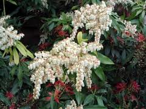

Pieris ou Andromède

Pieris ou Andromède (Andromède polifolia de la famille des Ericacées)
Attention : hautement toxique pour le Korat !
Partie toxique pour les chats en général et le Korat en particulier :
Toute la plante mais surtout les feuilles.